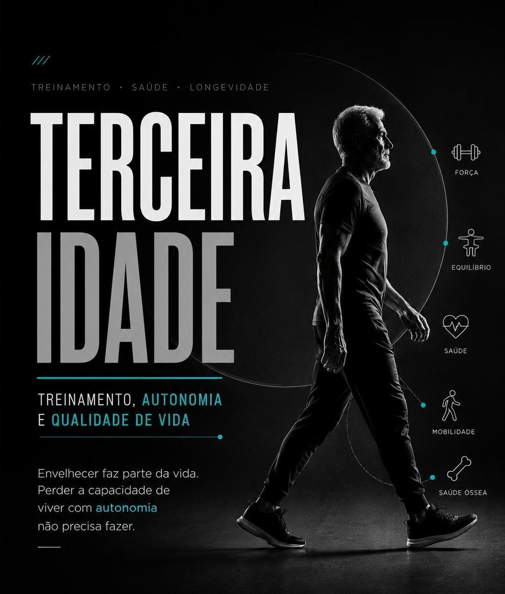
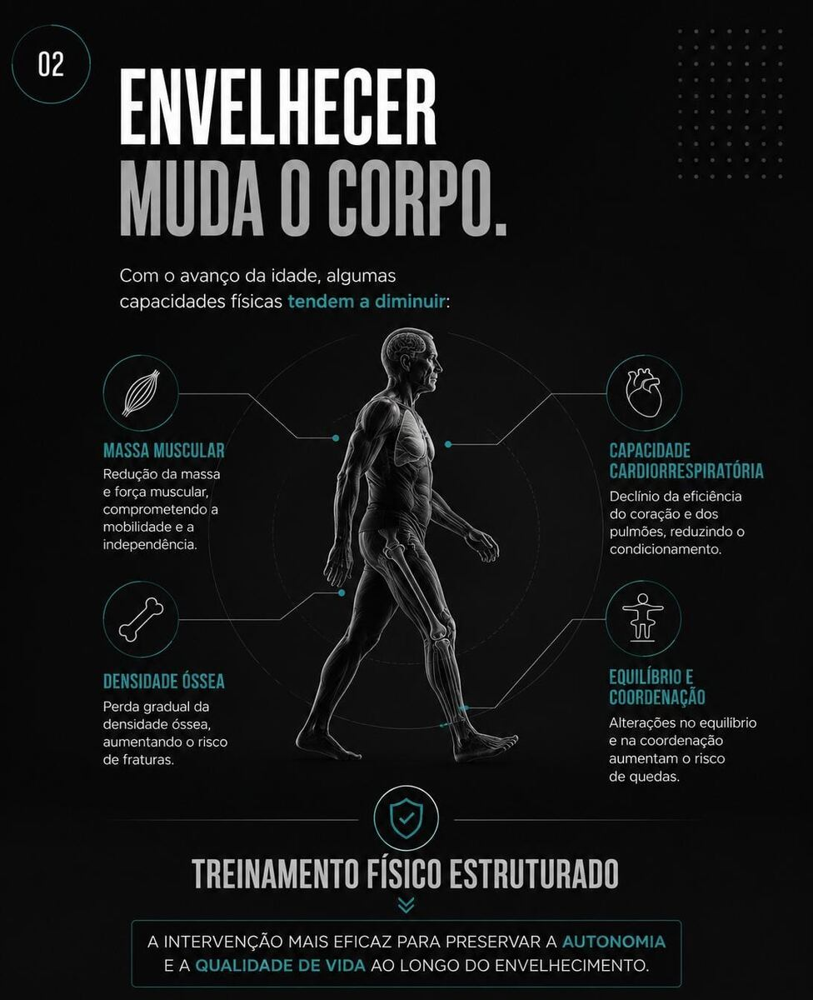
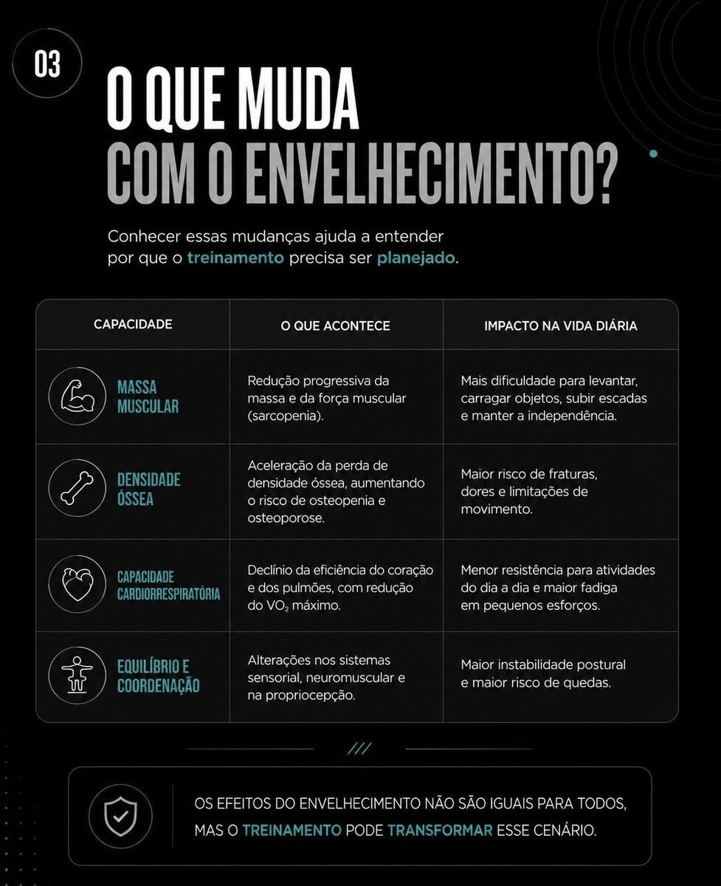
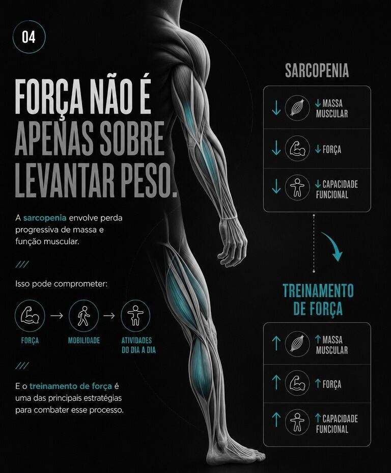
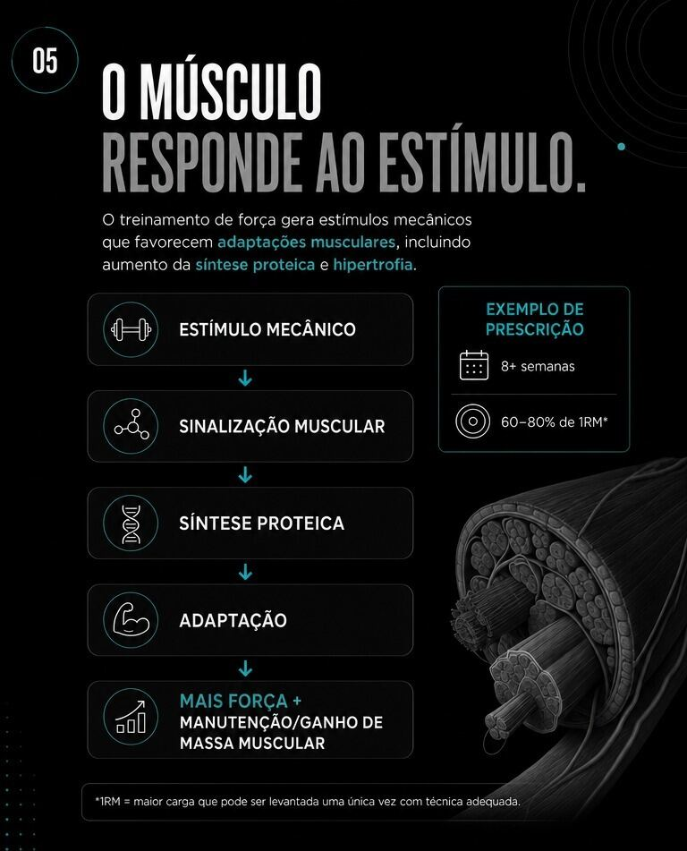
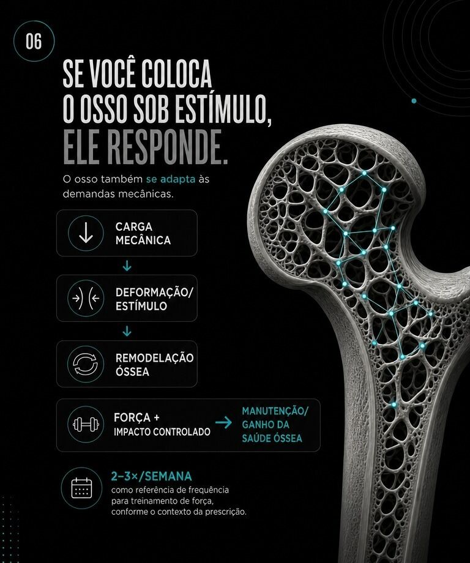
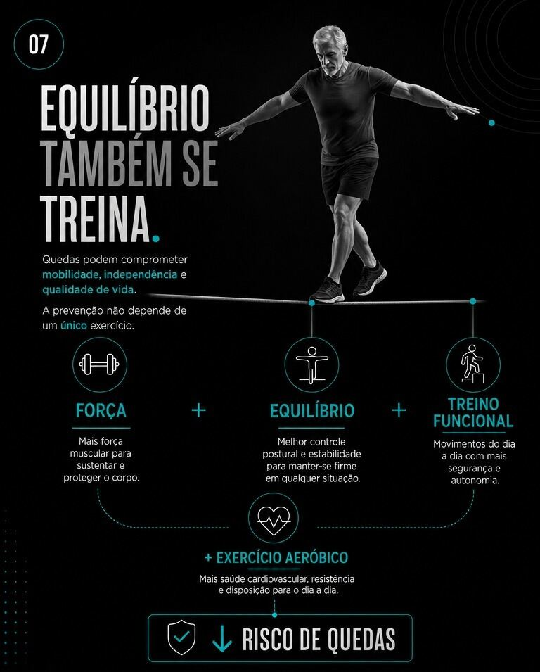
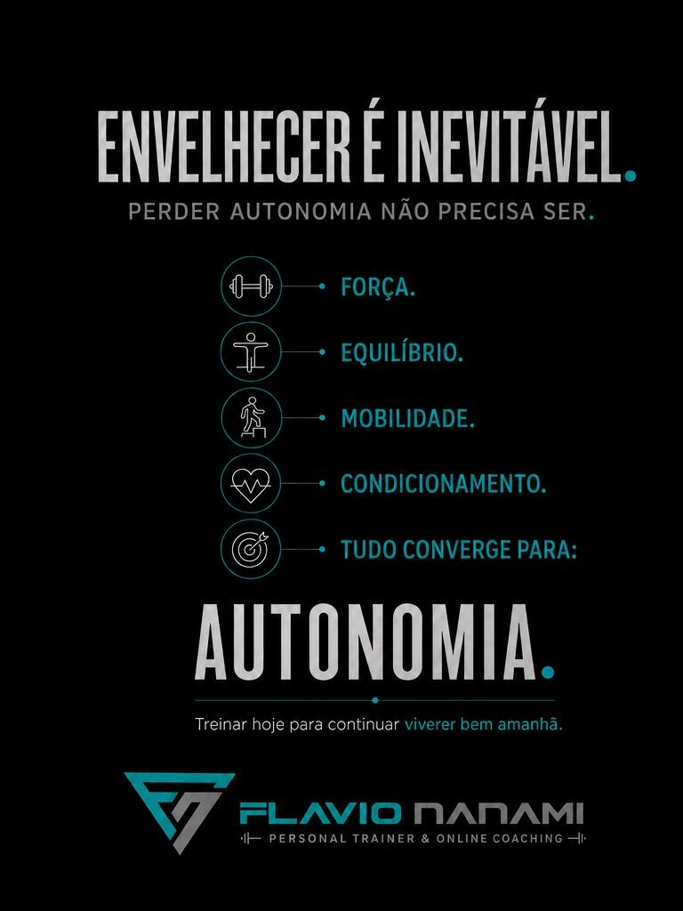
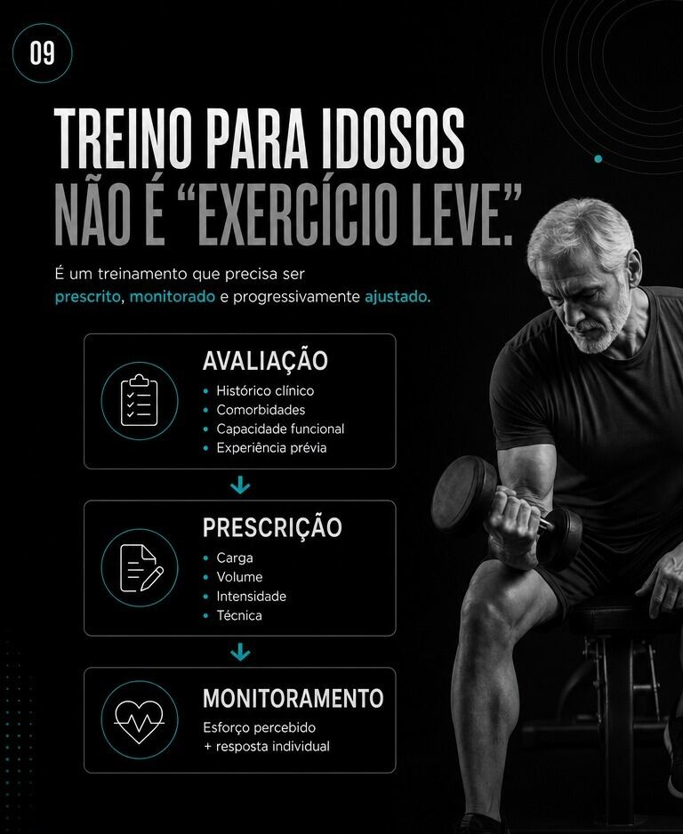
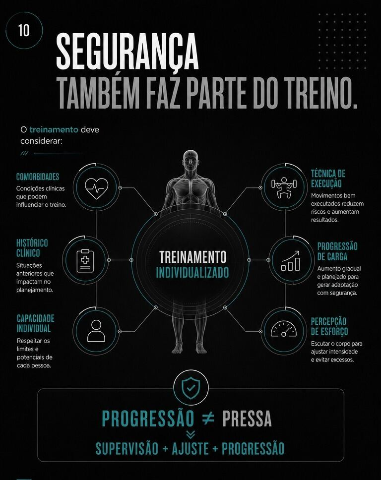

Treinamento, autonomia e qualidade de vida ao longo do envelhecimento.
Envelhecimento e Capacidade Funcional

O processo de envelhecimento é acompanhado por alterações fisiológicas progressivas, incluindo a redução de massa muscular, a perda de densidade óssea, o declínio da capacidade cardiorrespiratória e alterações no equilíbrio e na coordenação motora. O treinamento físico estruturado atua diretamente sobre esses biomarcadores, sendo uma das intervenções mais eficazes para preservar autonomia e qualidade de vida ao longo do envelhecimento.


Alteração Fisiológica
Taxa de Declínio Padrão
Fator de Aceleração
Impacto do Exercício Regular
Principal Consequência Clínica
Redução de Massa Muscular
3% a 8% por década após os 30 anos.
Acelera significativamente com o sedentarismo.
Atenua a perda, ajudando a preservar a função muscular.
Sarcopenia e perda de autonomia física.
Perda de Densidade Óssea
0,5% a 1% ao ano após os 30-40 anos.
Mulheres na menopausa podem perder de 1% a 5% ao ano.
Estimula a remodelação óssea e ajuda a preservar a densidade mineral.
Osteopenia, osteoporose e fraturas.
Declínio Cardiorrespiratório (VO2 máx)
Cerca de 10% por década após os 30 anos.
Progressão mais acentuada em pessoas sedentárias.
Reduz a taxa de queda para cerca de 5% por década.
Menor capacidade cardiovascular e fadiga precoce.
Equilíbrio e Coordenação
Declínio progressivo, mais evidente a partir dos 60 anos.
Perda mais rápida de propriocepção e reflexos em pessoas inativas.
Programas de equilíbrio e força reduzem significativamente o risco de quedas.
Instabilidade postural e maior risco de quedas.
Treinamento de Força e Sarcopenia

A sarcopenia é a perda progressiva de massa e função muscular associada à idade, comprometendo força, mobilidade e capacidade de realizar atividades cotidianas. Ensaios clínicos demonstram que o treinamento resistido (de força) é a intervenção mais efetiva para conter esse processo. Ele promove a manutenção e, em muitos casos, ganho de massa muscular mesmo em idades avançadas, com prescrição adequada de carga e volume.
O treinamento ativa vias de síntese proteica e promove a hipertrofia de fibras musculares (especialmente as do tipo II), revertendo o quadro clínico. Intervenções estruturadas com duração mínima de 8 semanas, utilizando cargas de 60% a 80% de 1RM (Uma Repetição Máxima), são o padrão recomendado por revisões da literatura para restaurar a força muscular em idosos. Uma Repetição Máxima é a maior quantidade de peso que se consegue levantar em um determinado exercício por uma única repetição, mantendo a técnica correta.

Saúde Óssea
O exercício com sobrecarga (treinamento de força) e atividades de impacto controlado estimulam a remodelação óssea, contribuindo para a manutenção da densidade mineral óssea e reduzindo o risco de fraturas.
O avanço da idade acelera a reabsorção óssea, elevando o risco de osteopenia e osteoporose. O osso é um tecido mecanossensível: o treinamento com sobrecarga mecânica e os exercícios de impacto controlado geram deformações na matriz óssea que estimulam a atividade dos osteoblastos (mecanotransdução). O posicionamento oficial do American College of Sports Medicine (ACSM) aponta que treinos de força combinados com múltiplos planos de movimento, realizados de 2 a 3 vezes por semana, preservam e aumentam a densidade mineral óssea, reduzindo a incidência de fraturas.

Equilíbrio e Prevenção de Quedas
Quedas representam uma das principais causas de perda de autonomia na terceira idade. O treinamento de equilíbrio, propriocepção e força de membros inferiores reduz significativamente o risco de quedas, atuando tanto na capacidade de reação a desequilíbrios quanto na prevenção primária.
As quedas são a segunda principal causa de morte por lesões não intencionais no mundo, segundo a Organização Mundial da Saúde (OMS), que estima cerca de 684 mil mortes anuais por esse motivo, sendo pessoas com mais de 60 anos o grupo de maior risco.
No Brasil, dados do Ministério da Saúde apontam mais de 13 mil mortes de idosos por quedas em 2024. Para a prevenção, a literatura é clara: não basta um "exercício genérico para idosos". O programa precisa combinar força, equilíbrio e treino funcional, além do exercício aeróbico. A OMS recomenda atividades multicomponentes que enfatizem força e equilíbrio funcional em 3 ou mais dias por semana justamente para prevenir quedas.

Autonomia Funcional
O objetivo central do treinamento para idosos é a transferência dos ganhos de força para a capacidade funcional: a habilidade de realizar de forma independente as atividades da vida diária, como o teste de levantar e caminhar (Timed Up and Go), subir degraus ou carregar objetos. Estudos de cinemática demonstram que treinos baseados em padrões de movimentos fundamentais geram melhora direta nos índices funcionais, estendendo a expectativa de vida ativa e livre de dependência institucional.

Segurança na Prescrição
O treinamento para a terceira idade exige avaliação individualizada, progressão de carga adequada, atenção a comorbidades e ajuste técnico contínuo. Trata-se de treino tecnicamente supervisionado, não de exercícios genéricos adaptados.

A prescrição deve considerar o histórico clínico do aluno, a presença de comorbidades (como hipertensão ou osteoartrite) e o monitoramento da escala de esforço percebido (como a Escala de Borg). O treinamento voltado à longevidade exige supervisão qualificada, garantindo a execução biomecânica correta e ajustes precisos de volume e intensidade para maximizar respostas fisiológicas positivas com o menor risco possível de lesões.

Fontes: Cruz-Jentoft et al., Age and Ageing (2019); Kohrt et al., Medicine & Science in Sports & Exercise (2004); Sherrington et al., Cochrane Database of Systematic Reviews (2019); Organização Mundial da Saúde, Falls (Fact Sheet); Ministério da Saúde do Brasil, Sistema de Informações sobre Mortalidade (SIM), 2024.
Treino individualizado, com acompanhamento técnico especializado.